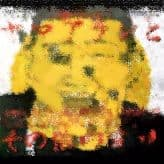

ここでは、空手バカボン名義では発表していないものの、本来空手バカボンのレパートリーであったものや、その事実が資料等により確認できるものを挙げていく。

厳密に言うとこのアルバムに参加しているのはケラと大槻ケンヂによるユニット「空手ボンボン」であり、内田雄一郎は不参加なので空手バカボンと同等に当サイトで取り上げるのはどうかとも思ったが、何より空手ボンボンなる名称が空手バカボンをモチーフにしたものであることは明白な上、放置するには惜しいほど豪華な面子が揃っているため、空手バカボンの「変種」として例外的に紹介する。
※注 歌詞は不掲載。作詞・作曲クレジットをクリックしても別になんの表示も・・・
2 ヤマアラシ嗜好症 / 空手ボンボン（ケラ・大槻ケンヂ）＋
西村知美＋巻上公一＋爆笑問題
空手チョップをもう一度。TOPへ
はてなブックマークの情報を読み込んでいます。